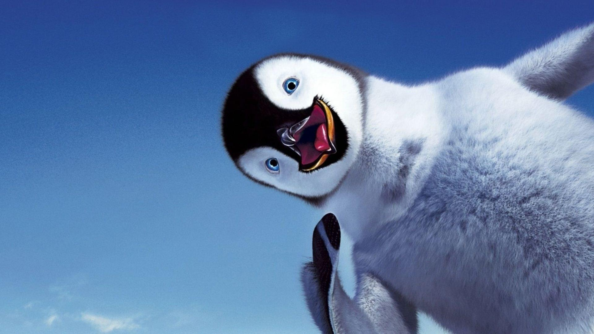

About Penguins
The birds currently known as penguins were discovered later and were so named by sailors because of their physical resemblance to the great auk. Despite this resemblance, however, they are not auks, and are not closely related to the great auk